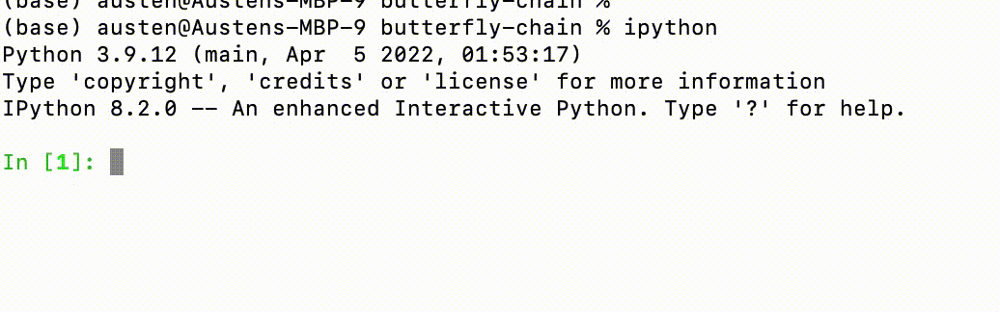
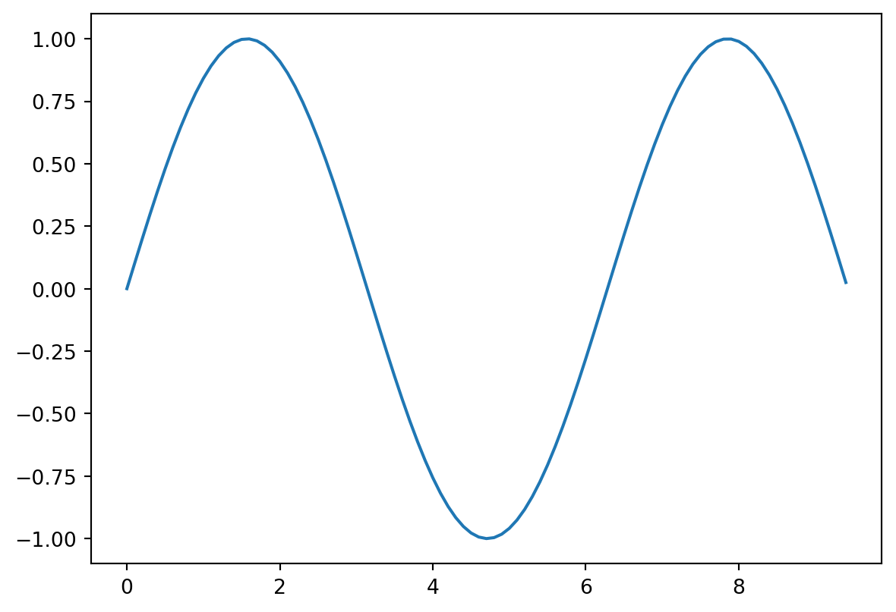
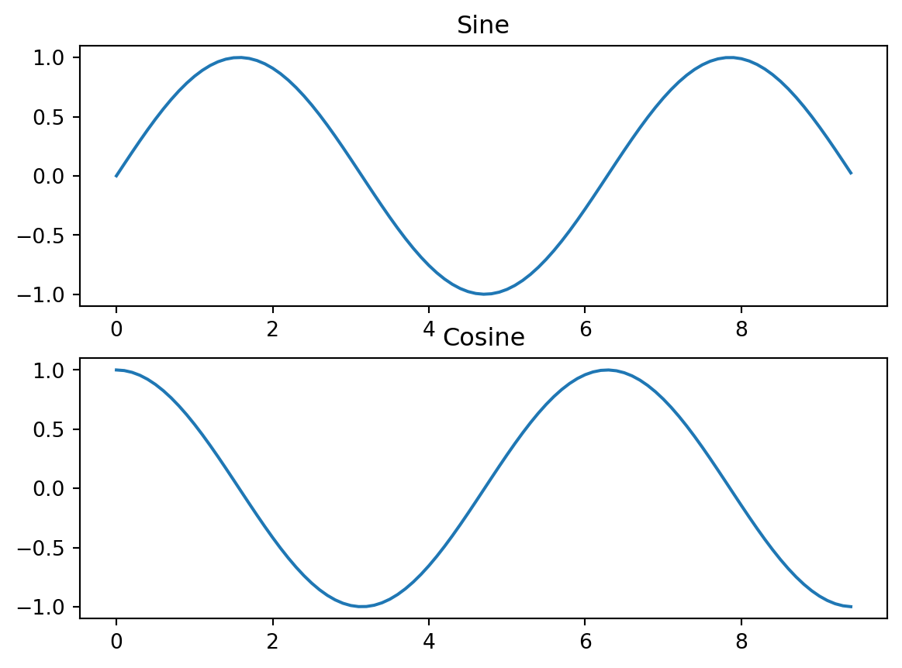

my_list = [1, 2, 3]
type(my_list)listThe NumPy package is the key building block of the Python scientific ecosystem.
In this chapter we introduce a few of the key concepts. You should refer to the documentation for details. As with any mature software ecosystem, you should first assume that what you want to achieve can be achieved in a highly optimised way within the existing framework, and only resort to creating your own solution if and when you satisfy yourself that this is not the case.
There are a huge number of resources for learning NumPy online. This is one particular nice and compact tutorial.
Everything in Python is an object. For example [1,2,3] is a list:
my_list = [1, 2, 3]
type(my_list)listYou can think of an object as a container for properties and methods, the latter being functions associated with the object. Properties and methods are accessed with the . syntax. For example, lists have the append method, which adds an element to the end of the list:
my_list.append("boop")
my_list[1, 2, 3, 'boop']With IPython you can see all the available methods by hitting tab:

You can list all of an objects properties and methods using dir:
dir(my_list)['__add__',
'__class__',
'__class_getitem__',
'__contains__',
'__delattr__',
'__delitem__',
'__dir__',
'__doc__',
'__eq__',
'__format__',
'__ge__',
'__getattribute__',
'__getitem__',
'__gt__',
'__hash__',
'__iadd__',
'__imul__',
'__init__',
'__init_subclass__',
'__iter__',
'__le__',
'__len__',
'__lt__',
'__mul__',
'__ne__',
'__new__',
'__reduce__',
'__reduce_ex__',
'__repr__',
'__reversed__',
'__rmul__',
'__setattr__',
'__setitem__',
'__sizeof__',
'__str__',
'__subclasshook__',
'append',
'clear',
'copy',
'count',
'extend',
'index',
'insert',
'pop',
'remove',
'reverse',
'sort']Notice that lots of these are methods have a name sandwiched between double underscores and for this reason are called dunder methods (or magic methods, or just special methods). This is to indicate that they are not to be used by you, but by the Python interpreter to implement certain standard functions that apply to many different classes of objects. For instance, when you write len(my_list) to find the length of my_list Python is actually calling the dunder method my_list.__len__ which does the job of actually finding the length.
my_list.__len__()4In this way the same function (len in this case) can operate on many different objects, an example of what is called polymorphism in object oriented programming.
The fundamental object in NumPy is the Array, which you can think of as a multidimensional version of a list. Let’s start with two dimensions to demonstrate:
import numpy as np
my_array = np.array([[1, 2, 3], [4, 5, 6], [7, 8, 9], [10, 11, 12]])type(my_array)numpy.ndarrayArrays can be indexed, similar to lists
print(my_array[0], my_array[1], my_array[3][1])[1 2 3] [4 5 6] 11but – different from a ordinary list of lists – the last one can be much more pleasantly achieved with the syntax
my_array[3,1]11We also have a generalization of the slice syntax
my_array[1:, 1:]array([[ 5, 6],
[ 8, 9],
[11, 12]])Slicing can be mixed with integer indexing
my_array[1:, 1]array([ 5, 8, 11])NumPy offers all sorts of fancy indexing options for slicing and dicing your data: see the documentation for details.
A fundamental property of an array is its shape:
# [[1, 2, 3], [4, 5, 6], [7, 8, 9], [10, 11, 12]]
my_array.shape(4, 3)The way to read off the shape of an array is as follows. To begin with you encounter a number of [ corresponding to the rank of the array (two in the above example). You then scan over a number of entries that give the rightmost (innermost) dimension in the shape tuple before closing ] (3 here). After a number of 1D arrays [...] equal to the next innermost dimension (4 here), we have another closing ], and so on.
It’s definitely something that will take a bit of time getting used to!
Notice that slicing does not change the rank of the array
my_array[1:, 1:].shape(3, 2)but integer indexing (which can be combined with slicing) does
my_array[1:, 1].shape(3,)NumPy has lots of methods to create arrays with a given shape and populated in different ways:
a = np.zeros((2,2))
print(a)
b = np.ones((2,2))
print(b)
c = np.full((2,2), 5)
print(c)
d = np.random.random((2,2)) # random numbers uniformly in [0.0, 1.0)
print(d)[[0. 0.]
[0. 0.]]
[[1. 1.]
[1. 1.]]
[[5 5]
[5 5]]
[[0.80272808 0.64242486]
[0.85253662 0.9894535 ]]A NumPy array has a dtype property that gives the datatype. If the array was created from data, this will be inferred
my_array.dtypedtype('int64')Functions that construct arrays also have an optional argument to specify the datatype
my_float_array = np.array([1,2,3], dtype=np.float64)
my_float_array.dtypedtype('float64')Now here comes the payoff. On lists, multiplication by an integer concatentates multiple copies
2 * [1, 2, 3][1, 2, 3, 1, 2, 3]which is sometimes useful. But in numerical applications what we really want is this
2 * np.array([1, 2, 3])array([2, 4, 6])This illustrates a general feature of NumPy that all mathematical operations are performed elementwise on arrays!
print(np.array([1, 2, 3]) + np.array([4, 5, 6]))
print(np.array([1, 2, 3])**2)
print(np.sqrt(np.array([1, 2, 3])))[5 7 9]
[1 4 9]
[1. 1.41421356 1.73205081]This avoids the need to write nested loops to perform some operation on each element of some multidimensional data. Of course, the loops are still there, it’s just that NumPy handles them in highly optimized C rather than Python. Code which operates in this way – rather than with explicit loops – is often described as vectorized, and in NumPy-speak vectorized functions are called ufuncs, short for universal functions (you can write your own if you need to). As a basic principle you should never use a Python loop to access your data in NumPy code. Loops may appear at a high level in stepping through time steps in a simulation, for example.
Vectorization is even more versatile than the above examples might suggest. Broadcasting is a powerful protocol that allows us to combine arrays of different shapes. Thus we can add a number to an array
np.array([1, 2, 3]) + 2.3array([3.3, 4.3, 5.3])More generally, elementwise operations can be performed on two arrays of the same rank if in each dimension the sizes either match or one array has size 1.
# These have shape (2, 3) and (1, 3)
np.array([[1, 2, 3], [4, 5, 6]]) + np.array([[4, 3, 2]])array([[5, 5, 5],
[8, 8, 8]])In fact, we can simplify this last example
# These have shape (2, 3) and (3,)
np.array([[1, 2, 3], [4, 5, 6]]) + np.array([4, 3, 2])array([[5, 5, 5],
[8, 8, 8]])Broadcasting two arrays follows these rules:
If the arrays do not have the same rank, prepend the shape of the lower rank array with 1s until both shapes have the same length.
The two arrays are said to be compatible in a dimension if they have the same size in the dimension, or if one of the arrays has size 1 in that dimension.
The arrays can be broadcast together if they are compatible in all dimensions. After broadcasting, each array behaves as if it had shape equal to the elementwise maximum of shapes of the two input arrays.
In any dimension where one array had size 1 and the other array had size greater than 1, the first array behaves as if it were copied along that dimension.
The documentation has more detail.
There are various specialized Python plotting libraries but the entry-level option is the catchily named Matplotlib. The pyplot module provides a plotting system that is similar to MATLAB (I’m told)
import matplotlib.pyplot as pltHere’s a simple example of the plot function, used to plot 2D data
# Compute the x and y coordinates for points on a sine curve
x = np.arange(0, 3 * np.pi, 0.1)
y = np.sin(x)
# Plot the points using matplotlib
plt.plot(x, y)
plt.show()
Note: you must call plt.show() to make graphics appear. Here’s a fancier example with some labelling
# Compute the x and y coordinates for points on sine and cosine curves
x = np.arange(0, 3 * np.pi, 0.1)
y_sin = np.sin(x)
y_cos = np.cos(x)
# Plot the points using matplotlib
plt.plot(x, y_sin)
plt.plot(x, y_cos)
plt.xlabel('x axis label')
plt.ylabel('y axis label')
plt.title('Sine and Cosine')
plt.legend(['Sine', 'Cosine'])
plt.show()
Often you’ll want to make several related plots and present them together, which can be achieved using the subplot function
import numpy as np
import matplotlib.pyplot as plt
# Compute the x and y coordinates for points on sine and cosine curves
x = np.arange(0, 3 * np.pi, 0.1)
y_sin = np.sin(x)
y_cos = np.cos(x)
# Set up a subplot grid that has height 2 and width 1,
# and set the first such subplot as active.
plt.subplot(2, 1, 1)
# Make the first plot
plt.plot(x, y_sin)
plt.title('Sine')
# Set the second subplot as active, and make the second plot.
plt.subplot(2, 1, 2)
plt.plot(x, y_cos)
plt.title('Cosine')
# Show the figure.
plt.show()
In the course of your work you are likely to produce, as well as consume lots of data. While it’s good practice to keep notebooks capable of reproducing any of your analyses, this could be time consuming and resource heavy for larger computations. Thus at some point you’ll probably want to save and load data. For example, after saving the data of a large scale simulation you’d like to load it and perform some analysis.
NumPy comes with its own save and load functions and associated binary format .npy. The benefit of using these is that after loading you get back a NumPy array ready to be used.
A related function savez allows several arrays to be saved and then loaded as a dictionary-like object.